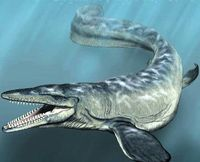

Description
The currently extinct deep-sea marine lizard Mosasaur is truly a terrifying creture, up to 40f long and with teeth almost 6 inches long.
It swims at incredible speeds to catch pray, and bites with a force almost over 6500 kilograms.

Mosasaur were armed with large, teeth-filled maws that alowed them to eat their prey hole, they were carnivorous creatures that fed on ammonties, by biting through their shellls with their powerful teeth.
They also ate any other meat they came across, including prehistoric sharks, birds, Plesiosaurs and other mosasaurs.

Mosasaur fossils have been found all over the world in places like Sweden, France, Germany, Russia, Australia and New Zealand.They lived in deep oceans and stayed in the depths to catch unsupecting prey.
They stayed away from shallower water as, they were too big to fit in it, but this does mean that prey can escape if it is fast enough.
Diet
They also ate any other meat they came across, including prehistoric sharks, birds, Plesiosaurs and other mosasaurs.
Location
They stayed away from shallower water as, they were too big to fit in it, but this does mean that prey can escape if it is fast enough.